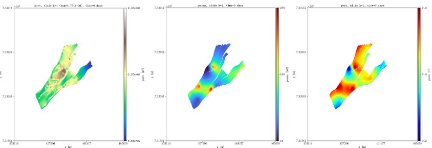
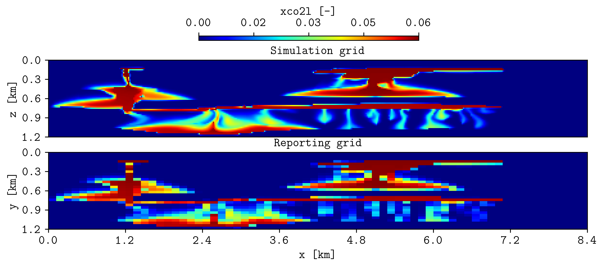
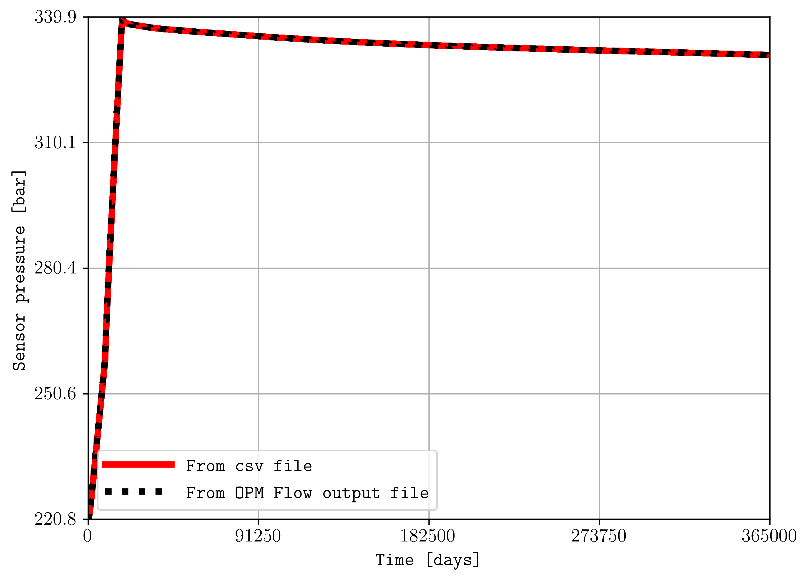

Examples
See this presentation from the OPM summit 2025 for additional examples using plopm,
Hello world
The simulation files located in the examples folder were generated using pyopmspe11 by running this configuration file. Then, if you succeed in installing plopm, inside the examples folder by typing in the terminal
plopm -i SPE11B
the following figure should be generated (this example is used in the tests, then it runs with the default terminal argument options).

See the Overview or run plopm -h for the definition of the argument options, as well as using -printv flag to output the available summary, init, and restart available variables given an input deck.
For example, for the gas saturation at the report step number 4 with three colorbar labels using a given colormap (-c) and defined colorbar ticks (-cticks):
plopm -i SPE11B -v sgas -r 4 -cnum 3 -c cubehelix -cticks '[0, middle, 0.9]'

and for the gas in place summary vector given a color, line style, font size, dimension of the figure, line width, and using dates for the times:
plopm -i SPE11B -v fgip -c b -e dotted -f 12 -d 5,5 -lw 4 -tunits dates
{kind=link}
To plot cell values over time, this can be achieved by:
plopm -i 'SPE11B SPE11B SPE11B' -v 'pressure - 0pressure' -s '1,1,1 41,1,29 83,1,58' -labels 'Top left corner Middle Right lower corner' -ylabel 'Pressure increase at the sensor locations [bar]' -yformat .0f -xlnum 11 -tunits dates
{kind=link}
Colormaps
The flag -c allows to set colormaps from Matplotlib (e.g., -c turbo), colormaps from colorcet (e.g., -c cet_glasbey_bw), or user defined colorbars, where each color is given in RGB (e.g., -c ‘193;147;56 127;148;191 193;127;97 181;73;57 81;124;66 101;64;147 134;133;130’) or HEX format (e.g., -c ‘#b6c406 #fffa86’).
Different colormap formats can be used when making a subfigure, for example:
plopm -i SPE11B -v satnum,fipnum,disperc -c '193;147;56 127;148;191 193;127;97 181;73;57 81;124;66 101;64;147 134;133;130',cet_glasbey_bw,'#b6c406 #fffa86' -subfigs 3,1 -delax 1 -cnum 3,6,2 -cformat .0f,.0f,.1f -d 7,4

Generic deck
See/run the test_generic_deck.py for an example where plopm is used to generate figures from the SPE10_MODEL2 model by downloading the files and using the OPM Flow simulator.

plopm -i SPE10_MODEL2 -v permz -s ,4, -log 1 -xunits km -yunits km -xlnum 6 -yformat .2f -t 'K$_z$ at the forth slide in the xz plane' -b '[1e-7,1e3]'
Here, we look at the forth slide in the xz plane and use log scale for the permeability in the z direction, as well as changing the axis units to km, setting the format to the numbers to two floats in the y axis, and setting manually the upper and lower bound for the color map.
To plot information for the grid, and also the location of the wells from the top view, this is achieved by:
plopm -i SPE10_MODEL2 -s ,,1 -d 3,4 -f 8 -v grid -remove 0,0,1,0 && plopm -i SPE10_MODEL2 -s ,,1 -d 3,4 -f 8 -v wells -remove 0,0,0,1
Here, we use the remove flag to delete the colorbar axis in the maps for the grid and to delete the generated title in the wells plot (the first entry in remove would delete the left axis, e.g., the y label and y ticks in this example, while the second entry if set to 1 would remove the x axis).
Rotation, translation, and zoom
This example relies on the simulation results in opm-tests. If you download the files in that folder, then by using the plopm tool:
plopm -i NORNE_ATW2013 -s ,,1
these are some of the generated figures:
In order to reduce the white space outside the active cells, as well as to rotate the grid and translate it, this can be ahieved by:
plopm -i NORNE_ATW2013 -s ,,1 -rotate 65 -translate '[6456335.5,-3476500]' -x '[0,5600]' -y '[0,7600]' -f 8
To show all faults in the model and to only show the ones connected all along the z direction, this can be achieved by:
plopm -i NORNE_ATW2013 -v faults -s ,,1 -rotate 65 -translate '[6456335.5,-3476500]' -x '[0,5600]' -y '[0,8800]' -f 8 -global 1
plopm -i NORNE_ATW2013 -v faults -s ,,1:22 -rotate 65 -translate '[6456335.5,-3476500]' -x '[0,5600]' -y '[0,8800]' -f 8 -how max
To show all wells in the model and to only show the ones with at least one perforation on the top layer, this can be achieved by:
plopm -i NORNE_ATW2013 -v wells -s ,,1 -rotate 65 -translate '[6456335.5,-3476500]' -x '[0,5600]' -y '[0,8800]' -f 8 -global 1
plopm -i NORNE_ATW2013 -v wells -s ,,1 -rotate 65 -translate '[6456335.5,-3476500]' -x '[0,5600]' -y '[0,8800]' -f 8
Note
For plotting the faults and wells, they must be specified in the input deck (no via include files).
Projections and subfigures
Here is an example of making a single figure plotting subfigures and using different approaches to project the quantities:
plopm -i NORNE_ATW2013 -v 'index_k,permx,poro' -s ',,1:22 ,,1:22 ,,1:22' -how 'first,arithmetic,max' -subfigs 1,3 -rotate 65 -translate '[6456335.5,-3476500]' -x '[0,5600]' -y '[0,8800]' -d 24,10 -c 'PuOr,vanimo,jet' -cformat '.0f,.0f,.2f' -cnum '2,4,8' -suptitle 0 -t "Top k values using first Averaged permx using arithmetic Values of porosity using max" -f 18

Histograms
Here is an example of two subfigures showing the histogram of the porosity and permeability in norne using 20 bins and norm and lognorm distributions respectively, showing also the mean and std which can be used for sampling (see the test for additional examples):
plopm -i NORNE_ATW2013 -v poro,permx -histogram '20,norm 20,lognorm' -axgrid 0 -subfigs 1,2 -d 15,5 -loc 'upper center' -y '[0,10000] [0,23000]' -c '#7274b3,#cddb6e'
Caprock integrity
Since there is an increase of interest in regional models, then we add three new variables -v related to the caprock integrity, i.e., the most top active cells in the given range -s:
limipres = stress*z-p0, where stress can be set via the flag -stress (0.134 by default, a common value in literature).
overpres = p-stress*z, i.e., a negative value means the limit pressure has not been reached.
objepres is the ratio of overpres to limipres, i.e., the value is of order of one and this can be used in optimization routines.
Motivated for objepres, then now we add an option for mode to write a csv with the non nan values, i.e., -m csv. For example, if we would like to estimate these values for norne for future CCS:
plopm -i 'NORNE_ATW2013' -s ',,1:22 ,,1:22' -v limipres,overpres -rotate 65 -translate '[6456335.5,-3476500]' -x '[0,5600]' -y '[0,8800]' -d 15,10 -c Spectral,spring, -subfigs 1,2 -delax 1
plopm -i 'NORNE_ATW2013' -m csv -v objepres -s ',,1:22'

Reading from csv files
Using the flag -csv allows to read values from csv files, allowing also to combine values from OPM Flow output files. To ilustrate this, let us consider the pyopmspe11 tool.
Tip
You can install pyopmspe11 tool by executing in the terminal: pip install git+https://github.com/OPM/pyopmspe11.git. Read the documentation in there to get familiar with the benchmark and the format of the csv files.
Then, let us consider the configuration file r1_Cart_10m.toml from the benchmark folder. In line 2 of that file set the number of cpus for the run (in the original file is 32; if you do not have mpi support, simply remove mpi, i.e., mpirun -np 32). To lower the simulation time, in line 10 set x_n to 420 and line 12 set z_n to 60. In addition, in line 51 remove the 1000 years of initialization, i.e., the injection should be:
inj = [[ 25, 5, 1, 0.035, 10, 1, 0, 10],
[ 25, 5, 1, 0.035, 10, 1, 0.035, 10],
[ 950, 5, 1, 0, 10, 1, 0, 10]]
Once you have installed pyopmspe11, then run the configuration file:
pyopmspe11 -i r1_Cart_10m.toml -o r1_Cart_10m -m deck_flow_data -g all -t 5 -r 70,1,30 -w 0.1 -f 0
This generates the output folder r1_Cart_10m, where the OPM Flow output files and the csvs are generated. To compare the spatial maps of the CO2 mass fraction from the simulation grid to the reporting grid (70 by 30), this can be achieved by:
plopm -v xco2l -i "r1_Cart_10m/R1_CART_10M r1_Cart_10m/spe11b_spatial_map_500y" -csv ";1,2,5" -subfigs 2,1 -delax 1 -r 100 -d 10,3 -suptitle 0 -t "Simulation grid Reporting grid" -cbsfax 0.35,0.97,0.3,0.02 -yunits km -xunits km -yformat .1f -xformat .1f -cnum 5 -xlnum 8 -cformat .2f
where the flag -csv “;1,2,5” has two main entries (number of input files) separated by ;, and the first entry is defaulted since the input it is an OPM Flow file, while the second entry has three values, where the first two sets the columns in the csv where the x and y coordinates are, and the last entry (5) it is the column for the plotted variable. The previous command generates the following figure:
To compare two summary quantities, this can be achiaved by:
plopm -i "r1_Cart_10m/spe11b_time_series r1_Cart_10m/R1_CART_10M" -v ",BWPR:1944" -csv "1,3;" -a "1e-5,1" -e "solid,dotted" -lw "4,4" -ylabel "Sensor pressure [bar]" -labels "From csv file From OPM Flow output file" -c "r,k"
where for summary variables, the flag -v “,BWPR:1944” needs to have empty entries for corresponding csv -i files, and the flag -a “1e-5,1” allows to convert the values in Pascal to bar from the csv file, multiplying by 1e-5. The previous command generates the following figure:
If you download the benchmark data from this website, then you could use plopm to compare simulation results. For example, by downloading the spe11_opm1.zip, spe11_opm2.zip, spe11_opm3.zip, and spe11_opm4.zip, then you could compare your simulations with those results by (to remove the legend, add the flag -loc empty):
plopm -i "opm1/spe11b_time_series opm2/spe11b_time_series opm3/spe11b_time_series opm4/spe11b_time_series r1_Cart_10m/spe11b_time_series" -csv "1,4;1,4;1,4;1,4;1,4" -tunits y -x "[0,1000]" -ylabel "dissA [kiloton]" -yformat .1f -a 1e-6 -c "#a8d8e3,#a8d8e3,#a8d8e3,#a8d8e3,#fc035a" -lw 5,5,5,5,5 -e solid
and for the spatial maps:
plopm -i "opm1/spe11b_spatial_map_250y opm2/spe11b_spatial_map_250y opm3/spe11b_spatial_map_250y opm4/spe11b_spatial_map_250y r1_Cart_10m/spe11b_spatial_map_250y" -csv "1,2,5;1,2,5;1,2,5;1,2,5;1,2,5" -subfigs 3,2 -delax 1 -suptitle 0 -cbsfax 0.35,0.97,0.3,0.02 -yunits km -xunits km -yformat .1f -xformat .1f -cnum 5 -xlnum 8 -cformat .2f -d 14,4 -t "opm1 opm2 opm3 opm4 my simulation" -clabel 'Time 250 years, CO$_2$ mass fraction (liquid phase) [-]' -c inferno
Tip
In general, the ability of plotting from csv files using the flag -csv is a game changer, expanding the applicability of plopm beyond the format of OPM Flow output files.
Convert to VTK
Inside the examples folder, then we can create VTKs from the OPM Flow simulation results (i.e., .EGRID, .INIT, .UNRST). For example, to create VTKS for the temperature, fipnum, the co2 mass, and the co2 mass fraction in the liquid phase from the restart files from the initial (0) to the number 5 restart, using a OPM Flow build from source in a given path, this can be achieved by:
plopm -i SPE11B -v temp,fipnum,co2m,xco2l -vtkformat Float32,UInt16,Float64,Float32 -r 0,5 -m vtk
Visualization using paraview of the grid and temperature after 25 years of CO2 injection.
Note
It is possible to write directly VTKs from OPM Flow simulations by adding the flag –enable-vtk-output=true. However, there are quantities that are not written (e.g., fipnum, flores), in addition to quantities not supported such as component mass (e.g., co2, h2o). This is when plopm can be helpful.
Different input files and ensembles
Let us assume we have two different runs in different folders for the spe11b case, where the firsts results are save in a folder called spe11b, and simulation results where the injection rate has been increased are saved in a folder called spe11b_larger_inj. Then, to plot the summary vector for both runs we can execute:
plopm -i 'spe11b/SPE11B spe11b_larger_inj/SPE11B' -v 'fgip,fgipm,RGIP:3 / 2' -a 1,1e-6 -tunits w -d 10,5 -c r,b -e 'solid,dashed' -t 'Field gas in place Comparing the total mass Half gas in place in fipnum 3' -f 14 -subfigs 2,2 -delax 1 -loc empty,empty,empty,center -save comparison

Here, using subplots, we plot the gas in place, injected mass and scaled to kilo tons, the regional gas in place in fipnum 3 divided by 2, and the time is shown in weeks.
Tip
For any summary variable, one can give the path to more than two different simulation cases, just by separating the folder paths by spaces in the -i.
To look at the difference between these two simulations for the dynamic variable sgas at the restar step 3, this can be achieved by executing:
plopm -i spe11b_larger_inj/SPE11B -v sgas -r 3 -diff spe11b/SPE11B -remove 0,0,0,1
To changue the colormap and setting the colorbar limits manually, this can be achieved by:
plopm -i spe11b_larger_inj/SPE11B -v sgas -r 3 -diff spe11b/SPE11B -remove 0,0,0,1 -c tab20c_r -b '[0,0.8]' -cnum 9

The ensemble folder provides a Python file to generate two different ensembles using pyopmnearwell, where the residual gas saturation is randomly generated.
Tip
You can install pyopmnearwell by executing in the terminal: pip install git+https://github.com/cssr-tools/pyopmnearwell.git.
Below are two of the generated figures after executing the script (additional figures are generated to show the functionality of the -ensemble flag):
Example of visualizing ensembles using plopm (example0.png and example3_formated.png respectively).
Note
As seen in this example, plopm supports the plotting of saturation functions using the ‘-v’ flag, namely ‘krw’, ‘krg’, ‘krow’, ‘krog’, ‘pcow’, ‘pcog’, and ‘pcwg’. By default, the saturation function is plotted for SATNUM=1. For a different table, this can be achieved by adding the number at the end of the variable, e.g., ‘pcog5’. In addition, if the model includes hysteresis, then to plot both drainage and imbibition curves this can be achieved by adding ‘h’ at the end of the variable, e.g., ‘krg3h’.
Filters
Using the flag -filter allows to remove cells given conditions separated by ‘&’, and it is also possible to set different filters in subfigures. For example:
plopm -i 'SPE11B SPE11B SPE11B' -filter ',fipnum >= 2 & fipnum != 4,satnum == 5' -v fipnum -subfigs 3,1 -delax 1 -cformat .0f -d 7,4 -u resdata -cbsfax 0.15,0.97,0.7,0.02 -t "No filter fipnum >= 2 and fipnum != 4 satnum == 5" -suptitle 0
Note
It is possible to set dynamic variables to filter as well such as sgas and pressure. However, this requires to output the dynamic pore volume, i.e., RPORV. This can be achieved by adding to the deck RPORV to the RPTRST in the SOLUTION and SCHEDULE section (and running the simulations).
GIF and mask
To create a gif and mask the results using the satnum numbers (any variable should be supported) for the different rock properties, this can be achieved by:
plopm -v xco2l -subfigs 1,2 -i 'spe11b/SPE11B spe11b_larger_inj/SPE11B' -d 16,2.5 -mask satnum -r 0,1,2,3,4,5 -m gif -dpi 1000 -t "spe11b spe11b larger injection" -f 16 -interval 1000 -loop 1 -cformat .2f -cbsfax 0.30,0.01,0.4,0.02
If -r is not provided, then by default the GIF uses all restart steps. For selected restart steps, these can be given separated by commas, e.g., -r 1,4,5.